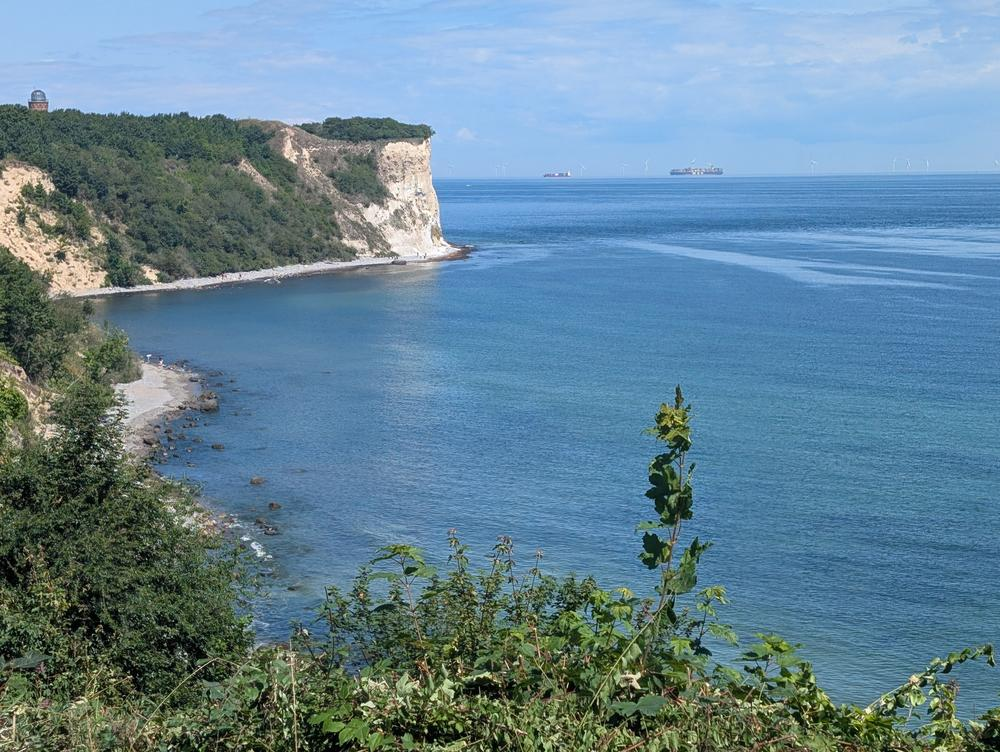
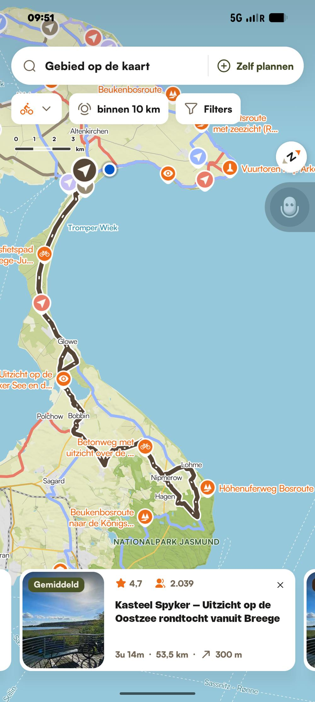
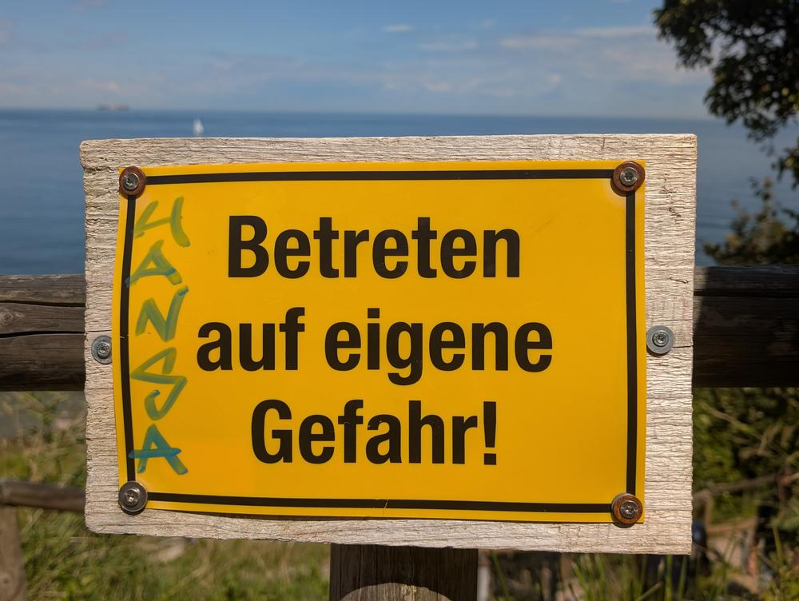
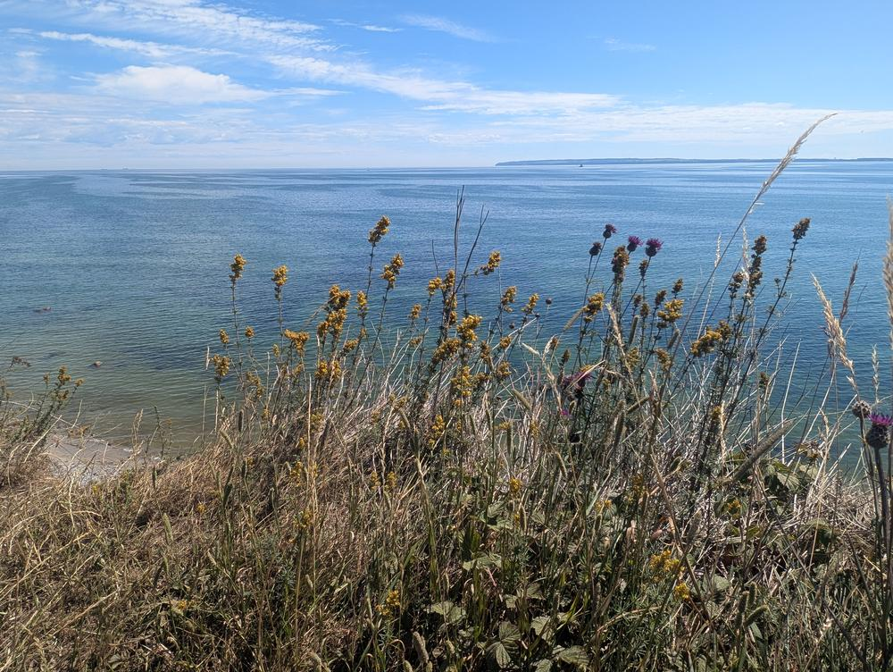
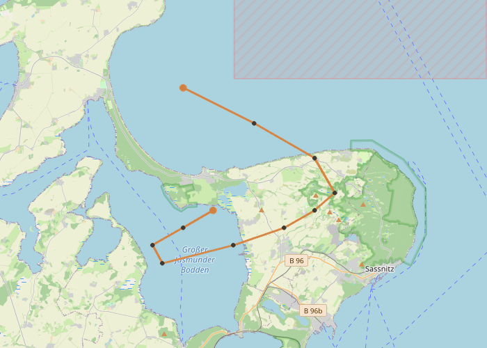

We vertrokken om half acht, toen het kamp nog stil was. Alleen het getik van een roodborst in de heg naast tent 47. De Komoot-route beloofde 53 kilometer en 300 hoogtemeters — voor Rügen aanzienlijk. Ik had het profiel de avond ervoor bestudeerd: het grootste deel vlak, met één forse klim naar de krijtrotsen.
De eerste kilometers waren precies dat: vlak, langs akkers en door dorpjes als Bobbin en Polchow. Het soort landschap waar je snelheid maakt zonder het te merken. Na Sagard begon het bos. Beukenbossen die hier al stonden voor iemand het woord ‘nationaalpark’ had bedacht. Het licht veranderde — gefilterd door een dak van bladeren, als fietsen door een kathedraal die zichzelf had gebouwd.
We left at half seven, while the camp was still quiet. Only the ticking of a robin in the hedge beside tent 47. The Komoot route promised 53 kilometres and 300 metres of elevation — considerable for Rügen. I had studied the profile the evening before: mostly flat, with one serious climb toward the chalk cliffs.
The first kilometres were exactly that: flat, past fields and through villages like Bobbin and Polchow. The kind of landscape where you build speed without noticing. After Sagard, the forest began. Beech woods that had been standing here before anyone coined the word ‘national park’. The light changed — filtered through a canopy of leaves, like cycling through a cathedral that had built itself.

De krijtrotsen van Jasmund. Het kleinste nationaalpark van Duitsland — dertig vierkante kilometer, opgericht op 12 september 1990 door de laatste DDR-regering. Drie weken voor de hereniging. Alsof iemand nog snel wilde vastleggen wat bescherming verdiende, voordat alles anders werd.
De rotsen zelf zijn zeventig miljoen jaar oud, gevormd uit de skeletten van ontelbare microscopische zeeorganismen. Afgezet op de bodem van een tropische zee, in een tijd toen Europa nog onder water lag. De Königsstuhl — de koningsstoel — rijst 118 meter boven de Oostzee uit. Het is minder indrukwekkend dan het klinkt en indrukwekkender dan je verwacht. Die tegenstrijdigheid blijft.
In 2005 stortte de Wissower Klinken in zee. Het motief dat Caspar David Friedrich in 1818 schilderde op zijn huwelijksreis — verdwenen in één februarinacht. Sinds 2011 staat het hele gebied op de UNESCO Werelderfgoedlijst, niet vanwege de rotsen maar vanwege de oerbossen van Europese beuk. De beuken trekken zich niets aan van lijsten.
The chalk cliffs of Jasmund. Germany’s smallest national park — thirty square kilometres, established on 12 September 1990 by the last GDR government. Three weeks before reunification. As if someone wanted to quickly record what deserved protection before everything changed.
The rocks themselves are seventy million years old, formed from the skeletons of countless microscopic sea creatures. Deposited on the floor of a tropical sea, at a time when Europe was still submerged. The Königsstuhl — the king’s chair — rises 118 metres above the Baltic. It is less impressive than it sounds and more impressive than you expect. That contradiction stays.
In 2005, the Wissower Klinken collapsed into the sea. The motif Caspar David Friedrich painted in 1818 during his honeymoon — gone in one February night. Since 2011 the entire area has been on the UNESCO World Heritage List, not for the cliffs but for the primeval beech forests. The beeches pay no attention to lists.
De krijtrotsen zijn gevormd uit de skeletten van ontelbare microscopische zeeorganismen, afgezet op de bodem van een tropische zee — zeventig miljoen jaar geleden, toen Europa nog onder water lag. The chalk cliffs were formed from the skeletons of countless microscopic sea creatures, deposited on the floor of a tropical sea — seventy million years ago, when Europe was still submerged.
Het bordje “Betreten auf eigene Gefahr!” markeerde het begin van het onverharde pad langs de klifrand. Iemand had er “HANSA” op gekalkt — een verwijzing naar de voetbalclub uit Rostock, of naar de Hanze? De ironie van eigendom op een waarschuwingsbord in een nationaalpark. Duitsland in één beeld.
Voorbij het hek werd het pad smaller. Gras tot je knieën, distels, wilde bloemen — guldenroede en het soort paars dat je niet opzoekt maar herkent. Het pad slingerde langs de rand. En dan opeens: de rand zelf. Zeventig meter loodrecht omlaag, krijtwit naar turquoise. Het soort uitzicht waar je instinctief een stap achteruit doet, en dan weer naar voren, omdat je het niet gelooft.
The sign reading “Betreten auf eigene Gefahr!” — enter at own risk — marked the start of the unpaved path along the cliff edge. Someone had chalked “HANSA” on it — a reference to the Rostock football club, or to the Hanseatic League? The irony of claiming ownership on a warning sign in a national park. Germany in one image.
Past the fence the path narrowed. Grass to your knees, thistles, wildflowers — goldenrod and the kind of purple you never look up but always recognise. The path wound along the edge. And then suddenly: the edge itself. Seventy metres straight down, chalk-white to turquoise. The kind of view where you instinctively step back, then forward again, because you do not believe it.

Friedrich schilderde de krijtrotsen in 1818, tijdens zijn huwelijksreis. De drie figuren in het schilderij verbeelden geloof, hoop en liefde — de vrouw in het rood is zijn kersverse bruid Caroline. Friedrich painted the chalk cliffs in 1818, during his honeymoon. The three figures in the painting embody faith, hope and love — the woman in red is his new bride Caroline.

Aan de klifrand, voorbij alle bordjes, werd het stil. Niet de stilte van afwezigheid maar die van aanwezigheid — wind, golven zeventig meter lager, het geruis van gras. De Oostzee beneden was abstract geworden: een kleurveld van blauw met de strepen van containerschepen op de verte. Windmolens aan de horizon, die langzaam draaiden alsof ze de tijd bijhielden.
Dit landschap bestaat al zeventig miljoen jaar en verandert elke dag. Caspar David Friedrich stond hier in 1818 met zijn kersverse vrouw en schilderde wat hij zag. Het schilderij hangt nu in een museum in Winterthur, achter glas, bij constante temperatuur. De rotswand die hij schilderde is in 2005 in zee gestort. Het schilderij overleefde het onderwerp.
Ik bleef langer zitten dan nodig was. Het was koud geworden — september op de Oostzee is optimistisch met een windbreaker — maar de kleuren bleven goed. Turquoise, krijtwit, het diepe groen van de beuken achter me. Op de terugweg 26 kilometer, vlak, met de wind mee. Het soort fietsen waar je niet bij nadenkt.
At the cliff edge, past all the signs, it grew quiet. Not the silence of absence but of presence — wind, waves seventy metres below, the rustle of grass. The Baltic below had become abstract: a colour field of blue with the streaks of container ships in the distance. Wind turbines on the horizon, turning slowly as if keeping time.
This landscape has existed for seventy million years and changes every day. Caspar David Friedrich stood here in 1818 with his new wife and painted what he saw. The painting now hangs in a museum in Winterthur, behind glass, at constant temperature. The rock face he painted collapsed into the sea in 2005. The painting outlived its subject.
I stayed longer than necessary. It had grown cold — September on the Baltic is optimistic with a windbreaker — but the colours held. Turquoise, chalk-white, the deep green of the beeches behind me. The ride back was 26 kilometres, flat, with the wind at my back. The kind of cycling you do not think about.
